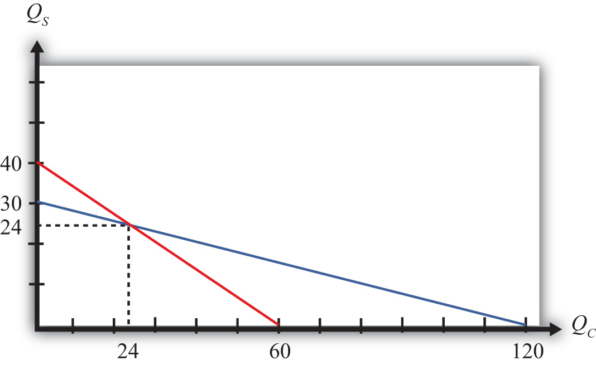

The magnification effect for quantities is a more general version of the Rybczynski theorem. It allows for changes in both endowments simultaneously and allows a comparison of the magnitudes of the changes in endowments and outputs.
The simplest way to derive the magnification effect is with a numerical example.
Suppose the exogenous variables of the model take the values in Table 5.3 "Numerical Values for Exogenous Variables" for one country.
Table 5.3 Numerical Values for Exogenous Variables
| aLC = 2 | aLS = 3 | L = 120 |
| aKC = 1 | aKS = 4 | K = 120 |
|
where L = labor endowment of the country K = capital endowment of the country aLC = unit labor requirement in clothing production aKC = unit capital requirement in clothing production aLS = unit labor requirement in steel production aKS = unit capital requirement in steel production |
||
With these numbers, , which means that steel production is capital intensive and clothing is labor intensive.
The following are the labor and capital constraints:
We graph these in Figure 5.3 "Numerical Labor and Capital Constraints". The steeper red line is the labor constraint and the flatter blue line is the capital constraint. The output quantities on the PPF can be found by solving the two constraint equations simultaneously.
Figure 5.3 Numerical Labor and Capital Constraints
A simple method to solve these equations follows.
First, multiply the second equation by (−2) to get
2QC + 3QS = 120and
−2QC − 8QS = −240.Adding these two equations vertically yields
0QC − 5QS = −120,which implies . Plugging this into the first equation above (any equation will do) yields 2QC + 3∗24 = 120. Simplifying, we get . Thus the solutions to the two equations are QC = 24 and QS = 24.
Next, suppose the capital endowment, K, increases to 150. This changes the capital constraint but leaves the labor constraint unchanged. The labor and capital constraints now are the following:
Follow the same procedure to solve for the outputs in the new full employment equilibrium.
First, multiply the second equation by (−2) to get
2QC + 3QS = 120and
−2QC − 8QS = −300.Adding these two equations vertically yields
0QC − 5QS = −180,which implies . Plugging this into the first equation above (any equation will do) yields 2QC + 3∗36 = 120. Simplifying, we get . Thus the new solutions are QC = 6 and QS = 36.
The Rybczynski theorem says that if the capital endowment rises, it will cause an increase in output of the capital-intensive good (in this case, steel) and a decrease in output of the labor-intensive good (clothing). In this numerical example, QS rises from 24 to 36 and QC falls from 24 to 6.
The magnification effect for quantities ranks the percentage changes in endowments and the percentage changes in outputs. We’ll denote the percentage change by using a ^ above the variable (i.e., = percentage change in X).
Table 5.4 Calculating Percentage Changes in the Endowments and Outputs
| The capital stock rises by 25 percent. | |
| The quantity of steel rises by 50 percent. | |
| The quantity of clothing falls by 75 percent. | |
| The labor stock is unchanged. |
The rank order of the changes in Table 5.4 "Calculating Percentage Changes in the Endowments and Outputs" is the magnification effect for quantitiesA relationship in the H-O model that specifies the magnitude of output changes in response to changes in the factor endowments.:
The effect is initiated by changes in the endowments. If the endowments change by some percentage, ordered as above, then the quantity of the capital-intensive good (steel) will rise by a larger percentage than the capital stock change. The size of the effect is magnified relative to the cause.
The quantity of cloth (QC) changes by a smaller percentage than the smaller labor endowment change. Its effect is magnified downward.
Although this effect was derived only for the specific numerical values assumed in the example, it is possible to show, using more advanced methods, that the effect will arise for any endowment changes that are made. Thus if the labor endowment were to rise with no change in the capital endowment, the magnification effect would be
This implies that the quantity of the labor-intensive good (clothing) would rise by a greater percentage than the quantity of labor, while the quantity of steel would fall.
The magnification effect for quantities is a generalization of the Rybczynski theorem. The effect allows for changes in both endowments simultaneously and provides information about the magnitude of the effects. The Rybczynski theorem is one special case of the magnification effect that assumes one of the endowments is held fixed.
Although the magnification effect is shown here under the special assumption of fixed factor proportions and for a particular set of parameter values, the result is much more general. It is possible, using calculus, to show that the effect is valid under any set of parameter values and in a more general variable proportions model.
Consider a two-factor (capital and labor), two-good (beer and peanuts) H-O economy. Suppose beer is capital intensive. Let QB and QP represent the outputs of beer and peanuts, respectively.
Consider a country producing milk and cookies using labor and capital as inputs and described by a Heckscher-Ohlin model. The following table provides outputs for goods and factor endowments before and after a change in the endowments.
Table 5.5 Outputs and Endowments
| Initial | After Endowment Change | |
|---|---|---|
| Milk Output (QM) | 100 gallons | 110 gallons |
| Cookie Output (QC) | 100 pounds | 80 pounds |
| Labor Endowment (L) | 4,000 hours | 4,200 hours |
| Capital Endowment (K) | 1,000 hours | 1,000 hours |
Consider the following data in a Heckscher-Ohlin model with two goods (wine and cheese) and two factors (capital and labor).
aKC = 5 hours per pound (unit capital requirement in cheese)
aKW = 10 hours per gallon (unit capital requirement in wine)
aLC = 15 hours per pound (unit labor requirement in cheese)
aLW = 20 hours per gallon (unit labor requirement in wine)
L = 5,500 hours (labor endowment)
K = 2,500 hours (capital endowment)